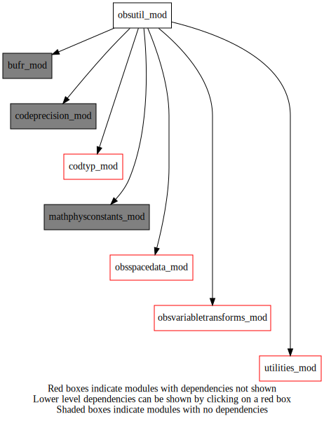
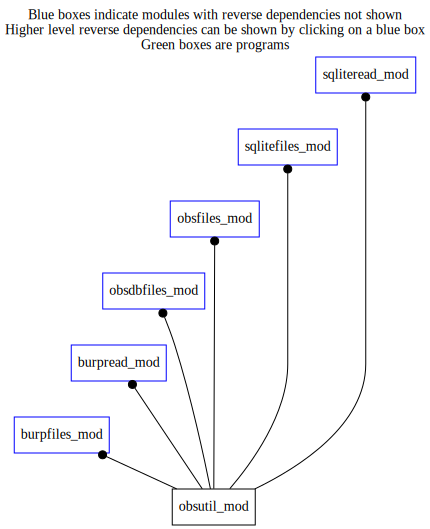

Dependency Diagrams:
 Direct Dependency Diagram¶
 Reverse Dependency Diagram¶
Description
MODULE obsUtil_mod (prefix=’obsu’ category=’3. Observation input/output’)
- Purpose
Common routines used by burpfiles_mod and sqlitefiles_mod
Quick access
- Routines
codtypfam(),obsu_computevertcoordsurfobs(),obsu_cvt_obs_instrum(),obsu_setassflg(),obsu_setgbgpserror(),obsu_updatesourcevariablesflag(),surfvcord()Needed modules
obsspacedata_mod: MODULE obsSpaceData_mod (prefix=’obs’ category=’6. High-level data objects’)
bufr_mod: MODULE bufr_mod (prefix=’bufr’ category=’8. Low-level utilities and constants’)
mathphysconstants_mod: MODULE MathPhysConstants_mod (prefix=’mpc’ category=’8. Low-level utilities and constants’)
codeprecision_mod: MODULE codePrecision_mod (prefix=’pre’ category=’8. Low-level utilities and constants’)
codtyp_mod: MODULE codtyp_mod (prefix=’codtyp’ category=’8. Low-level utilities and constants’)
obsvariabletransforms_mod: MODULE obsVariableTransforms_mod (prefix=’ovt’ category=’4. Data Object transformations’)
utilities_mod: MODULE utilities_mod (prefix=’utl’ category=’8. Low-level utilities and constants’)Variables
Subroutines and functions
- subroutine obsutil_mod/obsu_updatesourcevariablesflag(obsspacedata)¶
- Arguments
obsspacedata [struct_obs ]
- Called from
- Call to
obs_numbody(),ovt_istransformedvariable(),obs_bodyelem_i(),ovt_getsourcebufrcode(),obs_headelem_i(),obs_bodyelem_r(),ovt_iswindobs(),ovt_getdestinationbufrcode(),utl_abort(),obs_bodyset_i()
- subroutine obsutil_mod/obsu_setassflg(obsspacedata)¶
- Purpose
Set banco quality control bit #12 for all data assimilated by current analysis.
- Arguments
obsspacedata [struct_obs ]
- Called from
- Call to
- function obsutil_mod/surfvcord(varno, codtyp)¶
- Arguments
varno [integer ]
codtyp [integer ]
- Return
surfvcord [real ]
- Called from
- Call to
- function obsutil_mod/codtypfam(codtyp)¶
- Arguments
codtyp [integer ]
- Return
family [character ]
- Called from
- Call to
- subroutine obsutil_mod/obsu_computevertcoordsurfobs(obsdat, headerindexstart, headerindexend)¶
- Arguments
obsdat [struct_obs ,inout]
headerindexstart [integer ,in]
headerindexend [integer ,in]
- Called from
- Call to
obs_headelem_i(),obs_headelem_r(),obs_bodyelem_i(),surfvcord(),obs_bodyset_i()
- subroutine obsutil_mod/obsu_setgbgpserror(obsdat, headerindexstart, headerindexend)¶
- Arguments
obsdat [struct_obs ,inout]
headerindexstart [integer ,in]
headerindexend [integer ,in]
- Called from
- Call to
obs_headelem_i(),obs_bodyelem_i(),obs_bodyelem_r(),obs_bodyset_i()
- function obsutil_mod/obsu_cvt_obs_instrum(sensor)¶
- Purpose
Map burp satellite sensor indicator (element #2048) to burp satellite instrument (element #2019). This is a more complete common element, allowing for future expansion.
- Table of BURP satellite sensor indicator element #002048
Satellite sensor
BURP satellite sensor indicator
HIRS
0
MSU
1
SSU
2
AMSUA
3
AMSUB
4
AVHRR
5
SSMI
6
NSCAT
7
SEAWINDS
8
Reserved
9-14
Missing value
15
- Arguments
sensor [integer ] :: BURP satellite sensor indicator (element #2048)
- Return
obsu_cvt_obs_instrum [integer ]
- Called from
{kind=link}
{kind=link}